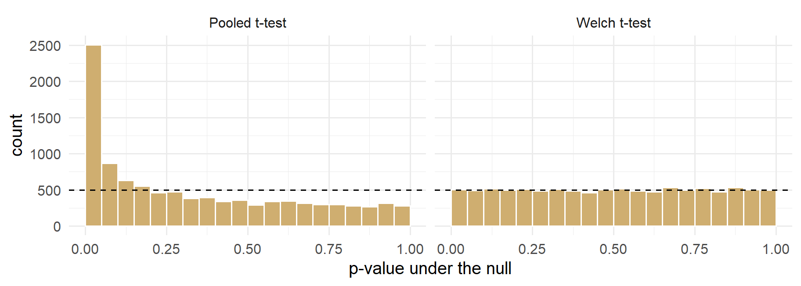
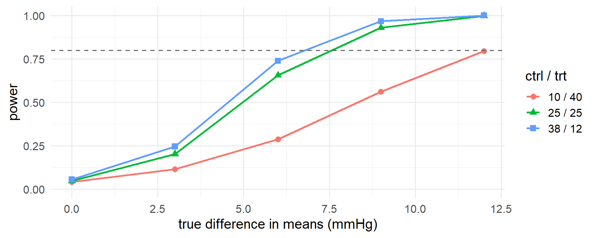

RNGkind()[1] "Mersenne-Twister" "Inversion" "Rejection" BIOS 6301 · Introduction to Statistical Computing
Invalid Date
| Course arc | Sessions | |
|---|---|---|
| Setup and workflow | 0–2 | |
| Data foundations | 3–8 | |
| Modern tools | 9–10 | |
| R programming | 11–13 | |
| Statistical computing | 14–16 | ← today |
Today’s deck develops one part of the current arc; later-session tools are named only when they clarify where this idea will be used.
1 Explain what a seed is, and why reproducible randomness is not a contradiction.
2 Draw from a distribution using the r* functions, and use d*, p*, q* for the other three questions.
3 Structure a simulation study with the ADEMP scaffold.
4 Write one function that simulates a dataset and one that analyses it, and iterate over replicates.
5 Compute bias, empirical standard error, and Monte Carlo error.
6 Choose the number of replicates from a target Monte Carlo SE.
7 Estimate type I error and power, and say what to do when the type I error is not what it should be.
| Block | Minutes | |
|---|---|---|
| 1 | Pseudorandom numbers, seeds, and streams | 12 |
| 2 | Drawing from distributions: sample and the four prefixes |
13 |
| 3 | ADEMP — a protocol for a simulation study | 10 |
| 4 | Building it: simulate one, analyse one, replicate | 20 |
| 5 | Bias, empirical SE, and Monte Carlo error | 12 |
| 6 | Type I error and power, worked | 18 |
| 7 | Practice and summary | 5 |
Style policy, from today: your choice. Base R, tidyverse, or a defensible mix — consistently, within a document. Today’s slides use base R for the simulation machinery and dplyr for summarising results, and says why when it matters.
rnorm() does not produce random numbers. It produces a deterministic sequence that passes the statistical tests we ask of randomness: the right distribution, no detectable serial correlation, an astronomically long period before it repeats.
R’s default generator is the Mersenne–Twister. Its state is 624 32-bit integers and its period is \(2^{19937}-1\).
The word is pseudorandom, and the determinism is not a defect. It is the property the rest of this session exploits.
[1] 1.3709584 -0.5646982 0.3631284[1] 1.3709584 -0.5646982 0.3631284Reproducible randomness is not a contradiction. The numbers are random with respect to your data — no structure, no correlation with anything you care about. They are fixed with respect to your machine.
[1] 626[1] 10403 624 507561766[1] 10403 2 -1577024373Two consequences that catch people:
set.seed() again.set.seed()| Placement | Verdict |
|---|---|
| Once near the top of the document | Fine for an analysis. The whole render is reproducible |
| Immediately before a simulation or a resample | Best. Stable even if you edit above it |
| Inside a function that gets called repeatedly | Catastrophic. Every replicate is identical, and nothing errors |
set.seed(i) inside a loop over i |
Reproducible, but the streams are not provably independent |
| Nowhere | Not reproducible. Not submittable |
Running in parallel? Workers do not inherit a usable stream. Use RNGkind("L'Ecuyer-CMRG") and seed once before parallel::mclapply(), or hand each worker a stream from parallel::nextRNGStream(). Know the name; the details are Advanced Statistical Computing.
sample()[1] 3 4 1 2 5[1] "P006" "P048" "P022" "P004"[1] "B" "A" "B" "B" "A" "A" "B" "B"size defaults to length(x).replace = TRUE is the one-word difference between permuting and resampling — which is the whole of session 15.prob = gives unequal selection probabilities.sample() trap[1] 3 5 2 1 6 7 4sample(x) with a length-1 numeric x samples from 1:x. No error, no warning, plausible output — the exact failure mode session 12 was about.
| Prefix | Question it answers | Example |
|---|---|---|
d |
What is the density (or pmf) at x? |
dnorm(0) |
p |
What is \(P(X \le q)\) — the CDF? | pnorm(1.96) |
q |
Which q has \(P(X \le q) = p\) — the quantile? |
qnorm(0.975) |
r |
Give me n random draws |
rnorm(10) |
rnorm, runif, rbinom[1] 155.8 144.1 172.9[1] 0.574 0.764 0.873[1] 0 0 1[1] 5 3 3You would not run a trial by collecting data until the result looked right. A simulation has the same failure mode and none of the oversight.
Written down in advance, a simulation study is evidence. Written down afterwards, it is a story about the settings that worked.
ADEMP — Morris, White & Crowther, “Using simulation studies to evaluate statistical methods,” Statistics in Medicine 38:2074–2102, 2019. Read it before you design one for real; it is the clearest thing written on the subject.
| You must be able to write down | ||
|---|---|---|
| A | Aims | The question, in one sentence |
| D | Data-generating mechanism | Exactly how one dataset is produced. Every parameter, every value |
| E | Estimands | The quantity being estimated — a number that exists before any method touches it |
| M | Methods | The procedures being compared, including the naive one |
| P | Performance measures | How you decide which method won, and with what precision |
Five headings, and the discipline is that you fill them in before you write any code.
| A | Does a two-sample t-test hold its nominal 5% type I error when the arms have different variances and different sizes? |
| D | \(y_{\text{ctrl}} \sim N(0, 12^2)\), \(n_{\text{ctrl}}\) patients; \(y_{\text{trt}} \sim N(\delta, 4^2)\), \(n_{\text{trt}}\) patients. Allocations 25/25, 10/40, 40/10 |
| E | \(\delta\), the difference in mean SBP change. Null case \(\delta = 0\); power cases \(\delta = 3, 6, 9, 12\) mmHg |
| M | Pooled t-test (var.equal = TRUE) vs Welch (var.equal = FALSE) |
| P | Rejection rate at \(\alpha = 0.05\); bias and empirical SE of \(\hat\delta\). \(n_{\text{sim}} = 10{,}000\), chosen for a Monte Carlo SE of 0.0022 |
The SDs are not invented: 12 and 4 mmHg bracket what our trial cohort shows for sbp_12 by arm.
The estimand is a property of the data-generating mechanism, not of a method. If you cannot write down its true value before running anything, you cannot compute bias.
flowchart LR P["<b>parameters</b><br/>n, sd, delta"] --> S["<b>simulate_one()</b><br/>one dataset"] S --> A["<b>analyse_one()</b><br/>one row of results"] A --> R["<b>replicate</b><br/>× n_sim"] R --> T["<b>results</b><br/>one row per replicate"] T --> M["<b>performance</b><br/>bias, SE, rejection rate"] style S fill:#CFAE70,stroke:#8a7448,color:#fff style A fill:#CFAE70,stroke:#8a7448,color:#fff style P fill:#f4efe4,stroke:#CFAE70
Session 11 gave you functions. Session 13 gave you iteration. This is what they were for.
simulate_one()# Simulate one two-arm trial. Returns a data frame with `arm` and `y`.
# Control is N(0, sd_ctrl^2); treatment is N(delta, sd_trt^2).
simulate_trial <- function(n_ctrl, n_trt, sd_ctrl, sd_trt, delta = 0) {
stopifnot(n_ctrl >= 2, n_trt >= 2, sd_ctrl > 0, sd_trt > 0)
data.frame(
arm = rep(c("ctrl", "trt"), c(n_ctrl, n_trt)),
y = c(rnorm(n_ctrl, mean = 0, sd = sd_ctrl),
rnorm(n_trt, mean = delta, sd = sd_trt))
)
}
set.seed(6301)
head(simulate_trial(3, 3, 12, 4, delta = 8), 3) arm y
1 ctrl -5.667400
2 ctrl 12.457060
3 ctrl 3.299615analyse_one()# Analyse one simulated trial with a two-sample t-test.
# Returns a named numeric vector: estimate, p-value, CI limits.
analyse_trial <- function(data, pooled = TRUE) {
stopifnot(is.data.frame(data), all(c("arm", "y") %in% names(data)))
fit <- t.test(y ~ arm, data = data, var.equal = pooled)
c(est = unname(diff(fit$estimate)), # trt minus ctrl
p = fit$p.value,
lo = -fit$conf.int[2], # t.test's CI is ctrl minus trt
hi = -fit$conf.int[1])
}
set.seed(6301)
round(analyse_trial(simulate_trial(20, 20, 12, 4, delta = 8)), 3) est p lo hi
8.171 0.002 3.164 13.177 run_scenario <- function(n_sim, n_ctrl, n_trt, sd_ctrl, sd_trt,
delta = 0, pooled = TRUE) {
out <- replicate(n_sim, {
d <- simulate_trial(n_ctrl, n_trt, sd_ctrl, sd_trt, delta)
analyse_trial(d, pooled = pooled)
})
as.data.frame(t(out)) # n_sim rows, one per replicate
}
set.seed(6301)
demo <- run_scenario(5, 20, 20, 12, 4, delta = 8)
round(demo, 3) est p lo hi
1 8.171 0.002 3.164 13.177
2 2.910 0.312 -2.845 8.664
3 1.976 0.474 -3.551 7.502
4 5.212 0.159 -2.138 12.562
5 6.813 0.027 0.811 12.815Keep one row per replicate, and carry every parameter that varies:
set.seed(6301)
res <- run_scenario(200, 10, 40, 12, 4, delta = 0, pooled = TRUE)
res$n_ctrl <- 10; res$n_trt <- 40; res$method <- "pooled"
res |>
group_by(method) |>
summarise(reject = mean(p < 0.05), bias = mean(est), emp_se = sd(est))# A tibble: 1 x 4
method reject bias emp_se
<chr> <dbl> <dbl> <dbl>
1 pooled 0.26 -0.243 3.78grid <- expand.grid(
alloc = c("25 / 25", "10 / 40", "40 / 10"),
method = c("pooled", "welch"),
delta = c(0, 6),
stringsAsFactors = FALSE
)
nrow(grid)[1] 12 alloc method delta
1 25 / 25 pooled 0
2 10 / 40 pooled 0
3 40 / 10 pooled 0nrow(grid) scenarios × n_sim replicates is the whole cost of the study. Compute that number before you start the run, not while it is running.
| Level | How | Use when |
|---|---|---|
| Chunk cache | #\| cache: true |
Seconds to a minute. Needs codetools |
| Results file | saveRDS(res, "output/sim.rds") |
Minutes to hours |
| Separate script | 01-run-sim.R writes; the .qmd reads |
Long enough that it should never run on render |
Save the seed and the parameter grid with the results. A cached object you cannot regenerate is not reproducible — it is just a file.
simulate_bad <- function(n_ctrl, n_trt, sd_ctrl, sd_trt, delta = 0) {
set.seed(6301) # <- the bug
data.frame(
arm = rep(c("ctrl", "trt"), c(n_ctrl, n_trt)),
y = c(rnorm(n_ctrl, 0, sd_ctrl), rnorm(n_trt, delta, sd_trt))
)
}
bad <- as.data.frame(t(replicate(500, analyse_trial(simulate_bad(25, 25, 12, 4)))))
c(reject = mean(bad$p < 0.05), bias = mean(bad$est), emp_se = sd(bad$est)) reject bias emp_se
0.000000 1.082951 0.000000 No error. No warning. A type I error of 0, a bias of exactly zero, and a perfectly plausible-looking estimate — from 500 copies of the same dataset.
| Where | Check |
|---|---|
| Arguments | stopifnot(n_ctrl >= 2, sd_ctrl > 0, length(delta) == 1) |
| The DGM | Simulate once at \(n = 10^6\); the empirical mean and SD must match the parameters |
| The results object | nrow(res) == n_sim, no NA, and sd(res$est) > 0 |
| A known case | A setting where you know the answer must return it, to within Monte Carlo error |
| Measure | Estimated by | Answers |
|---|---|---|
| Bias | \(\bar{\hat\theta} - \theta\) | Is the estimator systematically off? |
| Empirical SE | \(\mathrm{sd}(\hat\theta)\) | How variable is it, run to run? |
| Coverage | \(\frac{1}{n_{\text{sim}}}\sum \mathbb{1}\{\hat\theta_{\text{lo}} \le \theta \le \hat\theta_{\text{hi}}\}\) | Does the 95% CI cover 95% of the time? |
| Type I error | \(\mathrm{mean}(p < \alpha)\), with \(\theta = 0\) | Does the test hold its size? |
| Power | \(\mathrm{mean}(p < \alpha)\), with \(\theta \ne 0\) | Will the study detect a real effect? |
Type I error and power are the same computation on data from the same DGM with delta set differently. Nothing else changes.
Every number on the previous slide is itself an estimate, from \(n_{\text{sim}}\) draws. It has a standard error.
| Quantity | Monte Carlo SE |
|---|---|
| Bias | \(\mathrm{EmpSE}/\sqrt{n_{\text{sim}}}\) |
| Empirical SE | \(\mathrm{EmpSE}/\sqrt{2(n_{\text{sim}}-1)}\) |
| A rejection rate \(\hat p\) | \(\sqrt{\hat p(1-\hat p)/n_{\text{sim}}}\) |
At \(n_{\text{sim}} = 1000\), an observed 0.052 is consistent with anything from 0.038 to 0.066. That simulation cannot tell 5% from 6.5%.
Invert the formula. For a rejection rate near \(p\):
\[n_{\text{sim}} = \frac{p(1-p)}{\text{MCSE}^2}\]
| Target MCSE at \(p = 0.05\) | \(n_{\text{sim}}\) | Resolves |
|---|---|---|
| 0.010 | 475 | 0.05 vs 0.08 |
| 0.005 | 1,900 | 0.05 vs 0.065 |
| 0.0025 | 7,600 | 0.05 vs 0.057 |
| 0.001 | 47,500 | 0.05 vs 0.053 |
For bias, \(n_{\text{sim}} = (\mathrm{EmpSE}/\text{target})^2\). With an empirical SE of 3.9 mmHg and a target of 0.1 mmHg, that is 1,521.
1000 is a habit, not a decision. State the difference you need to detect, then compute \(n_{\text{sim}}\) — exactly as you would a sample size for a trial.
Two arms. Different variances — 12 vs 4 mmHg. Different sizes — and it is the combination that does the damage.
The pooled t-test assumes a common variance. It estimates one \(s_p\) from both arms, weighting by degrees of freedom, and gets \(n_1 + n_2 - 2\) df. Welch estimates each arm’s variance separately and adjusts the df downwards.
t.test() in R defaults to var.equal = FALSE. Most software does not, most textbooks teach the pooled version first, and most people tick the box that says “assume equal variances” because it sounds like the simpler model.
Four scenarios, \(\delta = 0\), \(n_{\text{sim}} = 10{,}000\). If the test is behaving, every number should be 0.05 ± 0.0044.
n_sim <- 10000
set.seed(6301)
scenarios <- list(
list(lab = "25 / 25", nc = 25, nt = 25, pooled = TRUE),
list(lab = "10 / 40", nc = 10, nt = 40, pooled = TRUE),
list(lab = "40 / 10", nc = 40, nt = 10, pooled = TRUE),
list(lab = "10 / 40", nc = 10, nt = 40, pooled = FALSE)
)
type1 <- do.call(rbind, lapply(scenarios, function(s) {
r <- run_scenario(n_sim, s$nc, s$nt, sd_ctrl = 12, sd_trt = 4,
delta = 0, pooled = s$pooled)
data.frame(alloc = s$lab, method = ifelse(s$pooled, "pooled", "Welch"),
reject = mean(r$p < 0.05), bias = mean(r$est), emp_se = sd(r$est))
}))
type1$mcse <- sqrt(type1$reject * (1 - type1$reject) / n_sim)| Allocation | Method | Rejection rate | MC SE | Bias | Emp. SE |
|---|---|---|---|---|---|
| 25 / 25 | pooled | 0.0543 | 0.0023 | -0.024 | 2.53 |
| 10 / 40 | pooled | 0.2614 | 0.0044 | +0.076 | 3.87 |
| 40 / 10 | pooled | 0.0016 | 0.0004 | +0.024 | 2.26 |
| 10 / 40 | Welch | 0.0469 | 0.0021 | +0.007 | 3.80 |
\(\sigma_{\text{ctrl}} = 12\), \(\sigma_{\text{trt}} = 4\), \(\delta = 0\), \(n_{\text{sim}} = 10{,}000\). Nominal \(\alpha = 0.05\).

Figure 1: Null p-values, 10,000 replicates, n = 10 / 40, sd = 12 / 4.
The dashed line is what a correct test gives: 500 per bin. The pooled test piles up near zero — and the excess is the inflated type I error.
Welch does not pool. It uses \(\sqrt{s_1^2/n_1 + s_2^2/n_2}\) and a Satterthwaite-approximated degrees of freedom, which is smaller — often much smaller — than \(n_1 + n_2 - 2\).
Holds its size. 0.0485 against a nominal 0.05, with a Monte Carlo SE of 0.0021.
Costs almost nothing. A percent or two of power in the worst case, and nothing at all in most.
var.equal = TRUE is a choice you have to justify. R’s default is the safe one; use it unless you can say why the variances are equal.

Figure 2: Welch power. Total N = 50 in every scenario. sd = 12 (ctrl) / 4 (trt).
Same DGM, same functions, one argument changed: delta. Fifty patients in every scenario — only the allocation differs.
None of that required any new mathematics. It required a DGM you could write down, two short functions, ten thousand replicates, and the discipline to report a Monte Carlo SE.
This is the general move: when you do not know whether a method works under your conditions, build your conditions and find out.
Next connection: Session 15 changes the simulated world into bootstrap, permutation, and cross-validation worlds.
BIOS 6301 · Session 14 · Random Numbers and Simulation